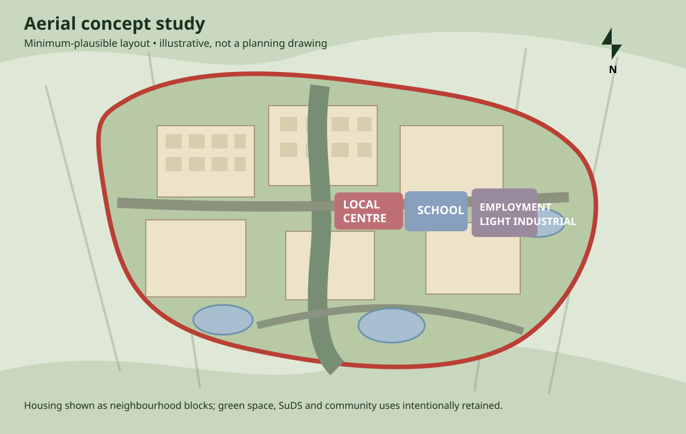
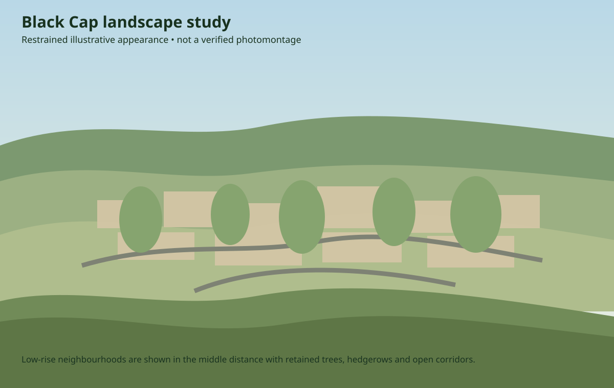

Independent evidence-led visualisation
What could North Barnes realistically become?
A public record of the emerging North Barnes Farm proposal, combining published developer material, planning evidence, real geography and restrained modelling — without pretending an illustrative scenario is a final design.
Up to 3,000 homes · primary-supportedApprox. 184–188 ha · primary/authority context25-year horizon · primary-supportedUpdated Sep 2026
Current proposal baseline
A proposed new settlement, with confidence shown claim by claim
Primary sources support up to 3,000 homes, a long-term phased approach, schools, green space and employment in principle. Some detailed quantities and named facilities currently rely on secondary local reporting and remain pending primary confirmation.
Primary-supported principles
- Up to 3,000 homes
- Residential neighbourhoods
- Schools / education provision in principle
- Green spaces and biodiversity measures in principle
- Employment / mixed-use provision in principle
- Long-term phased placemaking approach
Secondary-reported details pending primary confirmation
- 6,000 m² commercial / local-centre provision
- 10,000 m² light-industrial / employment space
- Health centre
- Sports hub and playing fields
- Wet Home Wood nature reserve
- Bevern Valley Park
Not fixed yet
- Detailed junction geometry
- Exact internal road layout
- Utility compounds and substations
- Wastewater / sewerage infrastructure locations
- Final drainage basin geometry
- Detailed building heights and architectural design
- GIS-verified observation-camera coordinates
Interactive scenario
How North Barnes could emerge over 25 years
The 25-year horizon is primary-supported. Intermediate housing and infrastructure quantities are analytical assumptions, not a claimed construction programme, and detailed commercial/employment/facility values remain source-qualified.
Scenario model v1.1Claim-level provenance · reproducible
Legacy schematic retained as a lightweight fallback while verified GIS/3D geometry is developed.
Today
Existing landscape
Baseline farmland and existing landscape structure.
0illustrative homes
0 m²illustrative commercial
0 m²illustrative employment
Important: the timeline is an analytical scenario. The 25-year horizon and 3,000-home maximum have primary support; intermediate phasing is illustrative, and detailed commercial/employment/named-facility claims remain source-qualified in the machine-readable model.
Visual studies
From evidence plan to digital twin
The new 3D layer progressively replaces these legacy concept studies. The target pipeline is verified GIS → terrain → procedural buildings and landscape → locked cameras → browser 3D and photographic CGI.


History & news
How the proposal has evolved
Early vision material
Developer concept material described a settlement of up to roughly 3,250 homes with extensive green infrastructure and community facilities.
Local-plan assessment
Lewes District Council assessment material considered the site at roughly 184 hectares with indicative capacity above 3,000 homes.
Current proposal baseline
ECE describes up to 3,000 homes with schools, green space and employment; Welbeck describes long-term phased placemaking. Detailed quantities shown elsewhere remain qualified where primary confirmation has not yet been secured.
Digital-twin programme begins
Progressive WebGL landscape exploration added ahead of verified GIS geometry and professional CGI outputs.
Evidence & provenance
Every visual and material claim carries a confidence level
Primary-supported
Directly supported by developer, promoter, council or statutory material.
Secondary-reported / pending confirmation
Reported by a secondary source and retained only with visible qualification until primary confirmation.
Illustrative only
Analytical proxy used to understand possible scale, phasing or appearance.
No invented A27 junctions. No River Ouse through the site. No relocated villages. No fictional treatment works. Unknown engineering remains unknown until evidence fixes it.